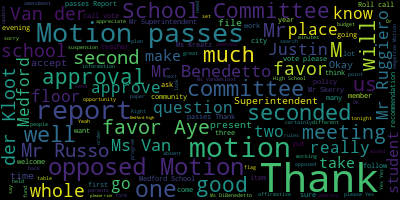

[Burke]: Present.
[Burke]: Six present, one absent.
[Burke]: All please rise and salute our flag.
[Burke]: And while you're all standing, if you could just remain standing so we can take a moment of silence for all the victims of the horrific event that happened in Las Vegas, as well as those that were injured.
[Burke]: Thank you.
[Burke]: Approval of the minutes of the September 18th.
[Burke]: There a second all those in favor mr. Benedetto So we were talking about
[Burke]: On the motion for adoption of the minutes as amended by Mr. Benedetto, all those in favor?
[Burke]: All those opposed?
[Burke]: Motion passes.
[Burke]: I also want to take note that we have Justin Tang with us tonight.
[Burke]: He's the student representative from Medford High School.
[Burke]: So welcome, Justin.
[Burke]: Thank you.
[Burke]: And Justin, feel free when we're discussing any matters, if you want to interject, just raise your hand and we'll acknowledge it.
[Burke]: Thank you.
[Burke]: Okay, approval of bills transfer of funds.
[Burke]: Motion for approval by Mr. Skerry, Mr. Benedetto.
[Burke]: On the motion that the bills and transfer of funds be approved.
[Burke]: All those in favor?
[Burke]: All those opposed?
[Burke]: Motion passes.
[Burke]: approval of payrolls.
[Burke]: Motion to approve.
[Burke]: Second.
[Burke]: All those in favor?
[Burke]: Aye.
[Burke]: All those opposed?
[Burke]: Motion passes.
[Burke]: Report of secretary.
[Burke]: There is none.
[Burke]: Report of committees.
[Burke]: Committee of the whole.
[Burke]: Mr. Superintendent.
[Burke]: On the minutes of the meeting of the committee of the whole the motion says that
[Burke]: She asked for a motion to have them appear if they're not able to rectify it in the next week internally.
[Burke]: Mustone.
[Burke]: All those in favor?
[Burke]: All those opposed?
[Burke]: Motion passes.
[Burke]: did you have another question?
[Burke]: All those opposed?
[Burke]: Motion passes.
[Burke]: Otherwise?
[Burke]: On the motion, let that be revisited.
[Burke]: Seconded by Mr. Skerry.
[Burke]: All those in favor?
[Burke]: Aye.
[Burke]: All those opposed?
[Burke]: Motion passes.
[Burke]: Very good.
[Burke]: Is there a motion for approval of the Committee of the Whole with those additions being looked into?
[Burke]: On the motion for approval.
[Burke]: All those in favor?
[Burke]: Aye.
[Burke]: All those opposed?
[Burke]: Motion passes.
[Burke]: Thank you.
[Burke]: Okay, community participation.
[Burke]: McGlynn Middle School teachers on Medford Public Schools Action Plan.
[Burke]: You name and address, please, for our record.
[Burke]: Thank you very much, teachers of the McGlynn.
[Burke]: We appreciate your comments and your spirit.
[Burke]: Certainly, that means a lot to the children of this community that have chosen to go to that school.
[Burke]: Several of them, many of them, are delighted to hear you tonight, I'm sure.
[Burke]: Thank you.
[Burke]: Mr. Superintendent.
[Burke]: Justin would like to add to this conversation.
[Burke]: So it happens.
[Burke]: Every year they kind of pick different schools, even though they all came from the Brooks.
[Burke]: But Justin and other graduates certainly could be great spokespeople for the school, as well as you, because you did a fabulous job tonight.
[Burke]: And we're really, really proud to have you here.
[Burke]: You said it all.
[Burke]: Mr. Sperry.
[Burke]: Mr. Superintendent.
[Burke]: On the motion that a meeting be held in the next month for an action plan to be developed inclusive of the teachers comments All those in favor motion carries
[Burke]: Okay.
[Burke]: Thank you.
[Burke]: Thank you very much for coming out today.
[Burke]: We appreciate it.
[Burke]: Oh, sorry.
[Burke]: Wait, hold on.
[Burke]: Sorry, sorry, that's okay.
[Burke]: We do have that information.
[Burke]: That wasn't implied that we didn't know about that information.
[Burke]: It was clarified.
[Burke]: They put that in there.
[Burke]: On the first.
[Burke]: We had a motion and we voted on that we will have a meeting within the next month and we'll reach out to you to come to the table.
[Burke]: We'll put an agenda together so it'll be a productive meeting.
[Burke]: Thank you very much.
[Burke]: Thank you.
[Burke]: Thank you
[Burke]: Report of the Superintendent.
[Burke]: First report on credit for life grant.
[Burke]: Mr. Superintendent.
[Burke]: Thank you, Dr. Riccadeli.
[Burke]: First off, because it's interactive, it seems like it'll be very innovative.
[Burke]: And the kids will really, I think, get into this whole process.
[Burke]: And secondly, if you'd like to add our names, any one of us, I'm sure, would sign on to any letters of request that you make to the banks and various entities in our city, certainly to try and get as many as possible participating.
[Burke]: I know with our community banks, that's what they do.
[Burke]: That's what they're all about.
[Burke]: So certainly, I'm sure.
[Burke]: All the ones that are in Medford will participate as well.
[Burke]: And just if we as a school committee could send our thank you out to the Division of Banks as well as the Treasurer's Office for providing this great opportunity on behalf of the students at Medford High.
[Burke]: We really appreciate it.
[Burke]: Thank you for all your hard work too.
[Burke]: You're welcome.
[Burke]: Are there any other questions?
[Burke]: Mr. Superintendent, do we formally have to accept the grant?
[Burke]: On the motion to receive and place on file by Mr. Benedetto, seconded by Ms.
[Burke]: Van der Kloot, all in favor?
[Burke]: Aye.
[Burke]: Opposed?
[Burke]: Motion passes, thank you very much.
[Burke]: Moving it forward, excellent.
[Burke]: Thank you.
[Burke]: Justin, have you had a chance to participate yet?
[Burke]: Very good.
[Burke]: There's a motion on the floor to place and file.
[Burke]: Seconded by Ms.
[Burke]: Vandekloot.
[Burke]: All those in favor?
[Burke]: All those opposed?
[Burke]: Motion passes.
[Burke]: Thank you.
[Burke]: Thank you.
[Burke]: Thank you.
[Burke]: Report on Community Preservation Act.
[Burke]: We have members of the committee, the CPC committee.
[Burke]: As you may realize, a year and a half ago, the citizens of Medford voted to adopt the CPA Act, which allows for monies to be put in a trust fund and spent for certain purposes, affordable housing, open space, and historic preservation.
[Burke]: And we have with us two members tonight that would like to explain it so that the public can become more aware of this program.
[Burke]: We have Joan Sear a member and Roberta Cameron is the chairperson of the committee.
[Burke]: I remember so many times seeing you gathering signatures to make sure that this would happen.
[Burke]: I would love to see that here.
[Burke]: We already have oil and grass.
[Burke]: are there any other recommendations they have been meeting with a lot of boards and commissions they've met with myself a lot of the department heads at City Hall
[Burke]: Lauren DiLorenzo with OCD about the open space plan.
[Burke]: This committee has worked so diligently and put in so many hours so that they really listen to the community.
[Burke]: It's almost like participatory budgeting to a degree where this is driven by the citizens as opposed to us up here driving it down.
[Burke]: So that's what's unique about this.
[Burke]: It's really coming from people.
[Burke]: Thank you.
[Burke]: Yes, thank you.
[Burke]: And then they make recommendations to the city council.
[Burke]: Very good.
[Burke]: Mr. Superintendent.
[Burke]: Thank you very much for the presentation and hopefully we'll participate in the upcoming forums.
[Burke]: Is there a motion to receive and place this report on file?
[Burke]: Yes.
[Burke]: On the motion, seconded by Ms.
[Burke]: Vander Kloot.
[Burke]: All those in favor?
[Burke]: Aye.
[Burke]: All those opposed?
[Burke]: Motion passes.
[Burke]: Thank you very much ladies.
[Burke]: Report on second annual health, wellness, and fitness fair.
[Burke]: Mr. Superintendent.
[Burke]: How appropriate at this time that I'm going to take an Advil.
[Burke]: No.
[Burke]: But yeah, I got to go to this event, actually, and it was a great turnout.
[Burke]: Thank you.
[Burke]: Great turnout.
[Burke]: Thank you to Lisa Evangelista for coordinating quite a bit of this forum.
[Burke]: Blood pressures were being taken.
[Burke]: Acupuncture was being served.
[Burke]: Is that a proper way of saying it?
[Burke]: And flu shots were given out.
[Burke]: So it was really a great event.
[Burke]: We had a lot of Medford's doctors, nurses, dental school there.
[Burke]: So there was just a lot of information and a lot of healthy habits to pick up.
[Burke]: So thanks everybody who put it on and who attended as well.
[Burke]: Thank you.
[Burke]: Yeah, I know.
[Burke]: So this is just an update on additional training that we're doing.
[Burke]: On the motion that Committee of the Whole be held in the next 30 days as well.
[Burke]: We also, sorry.
[Burke]: Before I do the roll.
[Burke]: on the motion that a committee of the whole be held in the next 30 days on both school brains as well as inclusionary field trips.
[Burke]: All those in favor?
[Burke]: All those opposed?
[Burke]: Motion passes.
[Burke]: Mr. Benedetto.
[Burke]: At this point.
[Burke]: And I also think that we should look at what can we do as a whole city so that we're not duplicating services.
[Burke]: on the city side and the school side and when it comes to like IT for example, human resources is another one.
[Burke]: Some of those things we could parlay and maybe create one department that can manage both sides of the balance sheet basically.
[Burke]: So maybe we could take a look at that Mr. Superintendent as well.
[Burke]: Thank you.
[Burke]: I think we already passed it.
[Burke]: Report on concussion law and Medford experience.
[Burke]: If I could interject, sometimes the game is played with less protection.
[Burke]: Like lacrosse, for example, because they're not supposed to hit, they get hit.
[Burke]: And they have no protection on their head.
[Burke]: Ms.
[Burke]: Bento.
[Burke]: Could we get the breakdown between female and male students?
[Burke]: This is scary.
[Burke]: Very good.
[Burke]: Thank you.
[Burke]: Thank you.
[Burke]: Motion to receive and place this report on file.
[Burke]: All those in favor?
[Burke]: All those opposed?
[Burke]: Motion passes.
[Burke]: Negotiations and legal matters.
[Burke]: And it was for other programs as well.
[Burke]: It was for other programs as well.
[Burke]: May I ask a question?
[Burke]: Ms.
[Burke]: Multiple.
[Burke]: PTOs.
[Burke]: PTOs.
[Burke]: PTOs.
[Burke]: Did they make a determination on PTOs?
[Burke]: they were actually using some of the community coalition to facilitate their meetings, so they have a group that is working together, so it's kind of ironic that they both scheduled meetings.
[Burke]: Right, so a few nights.
[Burke]: Yeah, collaborating.
[Burke]: But very good.
[Burke]: We do have one item of new business.
[Burke]: Be it resolved that the Medford School Committee express its sincere condolences to the family of D.L.
[Burke]: Velie.
[Burke]: Mr. Velie was the father-in-law of former Director of Finance and Administration, Patricia Vail.
[Burke]: If you could all please rise for a moment of silence.
[Burke]: Thank you.
[Burke]: Is there a motion that we, do you have anything else that you need?
[Burke]: Is there a motion that we adjourn?
[Burke]: Motion for suspension of the rules, Mr. Skerry.
[Burke]: Oh well, motion for approval of suspension of the rules, all those in favor?
[Burke]: Aye.
[Burke]: All those opposed, suspension is granted, Mr. Skerry.
[Burke]: We'll send a surrogate.
[Burke]: Everybody review their schedules for the next meeting, and we'll decide who can go to who can go.
[Burke]: Thank you very much Justin for being part of our conversation and to add to the conversation.
[Burke]: We appreciate it.
[Burke]: Motion to adjourn.
[Burke]: Present.
[Burke]: Six present, one absent.
[Burke]: All please rise and salute our flag.
[Burke]: And while you're all standing, if you could just remain standing so we can take a moment of silence for all the victims of the horrific event that happened in Las Vegas, as well as those that were injured.
[Burke]: Thank you.
[Burke]: Approval of the minutes of the September 18th.
[Burke]: Is there a second by Miss Vander Kloot?
[Burke]: All those in favor?
[Burke]: Mayor Burke?
[Burke]: Mr. Benedetto?
[Burke]: On the motion for adoption of the minutes as amended by Mr. Benedetto, all those in favor?
[Burke]: All those opposed?
[Burke]: Motion passes.
[Burke]: I also want to take note that we have Justin Tang with us tonight.
[Burke]: He's the student representative from Medford High School, so welcome Justin.
[Burke]: Thank you.
[Burke]: And Justin, feel free when we're discussing any matters, if you want to interject, just raise your hand and we'll acknowledge it.
[Burke]: Thank you.
[Burke]: Approval of bills transfer of funds.
[Burke]: Motion for approval by Mr. Skerry.
[Burke]: Mr. Benedetto.
[Burke]: On the motion that the bills and transfer of funds be approved.
[Burke]: All those in favor?
[Burke]: All those opposed?
[Burke]: Motion passes.
[Burke]: approval of payrolls.
[Burke]: Motion to approve.
[Burke]: Second.
[Burke]: All those in favor?
[Burke]: Aye.
[Burke]: All those opposed?
[Burke]: Motion passes.
[Burke]: Report of secretary.
[Burke]: There is none.
[Burke]: Report of committees.
[Burke]: Committee of the whole.
[Burke]: Mr. Superintendent.
[Burke]: On the minutes of the meeting of the committee of the whole the motion says that
[Burke]: She asked for a motion to have them appear if they're not able to rectify it in the next week internally.
[Burke]: It's a second by Ms.
[Burke]: Mustone.
[Burke]: All those in favor?
[Burke]: Aye.
[Burke]: All those opposed?
[Burke]: Motion passes.
[Burke]: Ms.
[Burke]: Kreatz, did you have another question?
[Burke]: All in the motion that a report of all the co-ops and internships that are being held by our vocational and high school students be delivered by staff, if need be.
[Burke]: Seconded by Ms.
[Burke]: Mustone.
[Burke]: All those in favor?
[Burke]: All those opposed?
[Burke]: Motion passes.
[Burke]: Otherwise?
[Burke]: On the motion, let that be revisited.
[Burke]: Seconded by Mr. Skerry.
[Burke]: All those in favor?
[Burke]: Aye.
[Burke]: All those opposed?
[Burke]: Motion passes.
[Burke]: Very good.
[Burke]: Is there a motion for approval of the Committee of the Whole with those additions being looked into?
[Burke]: On the motion for approval.
[Burke]: All those in favor?
[Burke]: Aye.
[Burke]: All those opposed?
[Burke]: Motion passes.
[Burke]: Thank you.
[Burke]: Okay, community participation.
[Burke]: McGlynn Middle School teachers on Medford Public Schools Action Plan.
[Burke]: You name and address, please, for our record.
[Burke]: Thank you very much, teachers of the McGlynn.
[Burke]: We appreciate your comments and your spirit.
[Burke]: Certainly, that means a lot to the children of this community that have chosen to go to that school.
[Burke]: Several of them, many of them, are delighted to hear you tonight, I'm sure.
[Burke]: Thank you.
[Burke]: Mr. Superintendent.
[Burke]: Justin would like to add to this conversation.
[Burke]: Justin certainly should be a recruit for your PFA.
[Burke]: And he certainly should be sharing those stories.
[Burke]: And I'm sure there's many graduates.
[Burke]: One of mine went to the, two went to the McGlynn, one went to the Andrews.
[Burke]: You know what happens every year they kind of pick different schools even though they all came from the Brooks But Justin and other graduates certainly could be great spokespeople for for the school as well as you because you did a fabulous job tonight We're really really proud to have you here.
[Burke]: You said said it all
[Burke]: Thank you.
[Burke]: Mr. Sperry.
[Burke]: On the motion that a meeting be held in the next month for an action plan to be developed inclusive of the teacher's comments.
[Burke]: Seconded by Ms.
[Burke]: Mustone.
[Burke]: All those in favor?
[Burke]: Aye.
[Burke]: All those opposed?
[Burke]: Motion carries.
[Burke]: Okay.
[Burke]: Thank you.
[Burke]: Thank you very much for coming out today.
[Burke]: We appreciate it.
[Burke]: Oh, sorry.
[Burke]: Wait, hold on.
[Burke]: Sorry, sorry, that's okay.
[Burke]: We do have that information.
[Burke]: That wasn't implied that we didn't know about that information.
[Burke]: It was clarified.
[Burke]: They put that in there.
[Burke]: Thank you.
[Burke]: Thank you.
[Burke]: We had a motion and we voted on that we will have a meeting within the next month and we'll reach out to you to come to the table.
[Burke]: We'll put an agenda together so it'll be a productive meeting.
[Burke]: Thank you
[Burke]: Superintendent.
[Burke]: First report on credit for life grant.
[Burke]: Mr. Superintendent.
[Burke]: Thank you, Dr. Riccadeli.
[Burke]: First off, because it's interactive, it seems like it'll be very innovative, and the kids will really, I think, get into this whole process.
[Burke]: And secondly, if you'd like to add our names, any one of us, I'm sure, would sign on to any letters of request that you make to the banks and various entities in our city, certainly to try and get as many as possible participating.
[Burke]: I know with our community banks, that's what they do, that's what they're all about, so certainly I'm sure.
[Burke]: All the ones that are in Medford will participate as well.
[Burke]: And just if we as a school committee could send our thank you out to the Division of Banks as well as the Treasurer's Office for providing this great opportunity on behalf of the students at Medford High.
[Burke]: We really appreciate it.
[Burke]: Thank you for all your hard work, too.
[Burke]: You're welcome.
[Burke]: Are there any other questions?
[Burke]: Mr. Superintendent, do we formally have to accept the grant?
[Burke]: On the motion to receive and place on file by Mr. Benedetto, seconded by Ms.
[Burke]: Van der Kloot, all in favor?
[Burke]: Aye.
[Burke]: Opposed?
[Burke]: Motion passes, thank you very much.
[Burke]: Report on game change, anti-violence partnership grant from New England Patriots Foundation.
[Burke]: Mr. Superintendent.
[Burke]: Moving it forward, excellent.
[Burke]: Thank you.
[Burke]: Justin, have you had a chance to participate yet?
[Burke]: Very good.
[Burke]: There's a motion on the floor to place and file.
[Burke]: Second.
[Burke]: Seconded by Ms.
[Burke]: Vander Kloot.
[Burke]: All those in favor?
[Burke]: Aye.
[Burke]: All those opposed?
[Burke]: Motion passes.
[Burke]: Thank you.
[Burke]: Thank you.
[Burke]: Report on Community Preservation Act.
[Burke]: We have members.
[Burke]: of the committee, the CPC committee.
[Burke]: As you may realize, a year and a half ago, the citizens of Medford voted to adopt the CPA Act, which allows for monies to be put in a trust fund and spent for certain purposes, affordable housing, open space, and historic preservation.
[Burke]: And we have with us two members tonight that would like to explain it so that the public can become more aware of this program.
[Burke]: We have Joan Cyr, a member, and Roberta Cameron is the chairperson of the committee.
[Burke]: I just really wanted to congratulate you on working so hard.
[Burke]: Yeah, I would love to see that here.
[Burke]: So it wouldn't be as hard, but dollars can make a big difference, right?
[Burke]: Very good idea, Kathy.
[Burke]: Are there any other recommendations?
[Burke]: They have been meeting with a lot of boards and commissions.
[Burke]: They have met with myself, a lot of the department heads at City Hall, Lauren DiLorenzo with OCD about the open space plan.
[Burke]: This committee has worked so diligently and put in so many hours.
[Burke]: So that they really listen to the community It's almost like a participatory budgeting to a degree where this is driven by the citizens as opposed to us up here driving it down So that's what's unique about this.
[Burke]: It's really coming from Thank you
[Burke]: And then they make recommendations to the city council.
[Burke]: Very good.
[Burke]: Mr. Superintendent.
[Burke]: Thank you very much for the presentation and hopefully we'll participate in the upcoming forums.
[Burke]: Is there a motion to receive and place this report on file?
[Burke]: Yes.
[Burke]: On the motion, seconded by Ms.
[Burke]: Vander Kloot.
[Burke]: All those in favor?
[Burke]: Aye.
[Burke]: All those opposed?
[Burke]: Motion passes.
[Burke]: Thank you very much ladies.
[Burke]: Report on second annual health, wellness, and fitness fair.
[Burke]: Mr. Superintendent.
[Burke]: How appropriate at this time that I'm going to take an Advil.
[Burke]: No.
[Burke]: But yeah, I got to go to this event, actually.
[Burke]: And it was a great turnout.
[Burke]: Thank you.
[Burke]: Great turnout.
[Burke]: Thank you to Lisa Evangelista for coordinating quite a bit of this forum.
[Burke]: Blood pressures were being taken.
[Burke]: Acupuncture was being served.
[Burke]: Is that a proper way to say it?
[Burke]: And flu shots were given out.
[Burke]: So it was really a great event.
[Burke]: We had a lot of Medford's doctors, nurses, dental school there.
[Burke]: So there was just a lot of information and a lot of healthy habits to pick up.
[Burke]: So thanks everybody who put it on and who attended as well.
[Burke]: Thank you.
[Burke]: Yeah, I know.
[Burke]: Very good motion that this report be placed on file All those opposed motion passes report on school brains training so this is just an update on additional training that we're doing on
[Burke]: On the motion that Committee of the Whole be held in the next 30 days as well.
[Burke]: Second.
[Burke]: Yeah.
[Burke]: We also, sorry.
[Burke]: Before I do the roll.
[Burke]: on the motion that a committee of the whole be held in the next 30 days on both school brains as well as inclusionary field trips.
[Burke]: All those in favor?
[Burke]: All those opposed?
[Burke]: Motion passes.
[Burke]: At this point.
[Burke]: And I also think that we should look at what can we do as a whole city so that we're not duplicating services on the city side and the school side, and when it comes to like IT, for example, human resources, another one.
[Burke]: Some of those things we could parlay and maybe create one department that can manage both sides of the balance sheet, basically.
[Burke]: So maybe we could take a look at that, Mr. Superintendent, as well.
[Burke]: Thank you.
[Burke]: I think we already passed it.
[Burke]: All righty, report on concussion law and Medford experience.
[Burke]: If I could interject, sometimes the game is played with less protection.
[Burke]: Like lacrosse, for example, because they're not supposed to hit, they get hit.
[Burke]: And they have no protection on their head.
[Burke]: Ms.
[Burke]: Bento.
[Burke]: Could we get the breakdown between female and male students?
[Burke]: This is scary.
[Burke]: Thank you.
[Burke]: Thank you.
[Burke]: Motion to receive and place this report on file.
[Burke]: All those in favor?
[Burke]: All those opposed?
[Burke]: Motion passes.
[Burke]: negotiations and legal matters.
[Burke]: And it was for other programs as well.
[Burke]: It was for other programs as well.
[Burke]: Multiple.
[Burke]: PTOs?
[Burke]: PTOs.
[Burke]: PTOs, did they make a determination on PTOs?
[Burke]: They're actually using some of the community coalition to facilitate their meetings, so they have a group that is working together, so it's kind of ironic that they both scheduled meetings.
[Burke]: Right, so two nights.
[Burke]: Yeah, collaborating.
[Burke]: But very good.
[Burke]: We do have one item.
[Burke]: of new business, be it resolved that the Medford School Committee express its sincere condolences to the family of D.L.
[Burke]: Velie.
[Burke]: Mr. Velie was the father-in-law of former Director of Finance and Administration, Patricia Vail.
[Burke]: If you could all please rise for a moment of silence.
[Burke]: Thank you.
[Burke]: Is there a motion that we, do you have anything else that you, is there a motion that we adjourn?
[Burke]: Motion for approval of suspension of the rules.
[Burke]: All those in favor?
[Burke]: Aye.
[Burke]: All those opposed?
[Burke]: Suspension is granted.
[Burke]: We'll send a surrogate.
[Burke]: Everybody review their schedules for the next meeting, and we'll decide who can go to who can go.
[Burke]: And thank you very much, Justin, for being part of our conversation and to add to the conversation.
[Burke]: We appreciate it.
[Burke]: Motion to adjourn.
[Burke]: All right.
[Burke]: Regular meeting of Medford School Committee will now come to order.
[Burke]: The secretary will call the roll.
[Burke]: Four present, two absent, three absent.
[Burke]: All please rise and slip the flag.
[Burke]: First item, approval of the minutes from November 20th to November 17th.
[Burke]: Motion for approval, Ms.
[Burke]: Disceri.
[Burke]: Second.
[Burke]: Second by Ms.
[Burke]: Van der Kloot.
[Burke]: All those in favor?
[Burke]: Aye.
[Burke]: All those opposed?
[Burke]: Motion passes.
[Burke]: second.
[Burke]: Yes.
[Burke]: Bill's transfer of funds for approval.
[Burke]: Motion for approval Mr. scary is there a second.
[Burke]: Roll call vote please.
[Burke]: Please mark Ms.
[Burke]: Cugno as present.
[Burke]: Approval of payrolls.
[Burke]: Motion for approval, Mr. Skerry.
[Burke]: Seconded by Ms.
[Burke]: Krebs.
[Burke]: Yes.
[Burke]: I did the affirmative to absent motion passes.
[Burke]: report of committee, November 13th Committee of the Whole meeting.
[Burke]: Okay Also, have you spoke to the coach?
[Burke]: Ms.
[Burke]: Konyo.
[Burke]: So you're digging while you're getting that up.
[Burke]: Mr. Turangali our student representative sure
[Burke]: We'll mark it for a report, follow-up report on our agenda?
[Burke]: And is there a motion to accept this committee of the whole report from November 13th?
[Burke]: Oh, actually amended.
[Burke]: I was not present at this meeting.
[Burke]: I had you to it.
[Burke]: Is there a motion for acceptance of the report as amended?
[Burke]: So I just seconded by Mr. Skerry.
[Burke]: All those in favor?
[Burke]: Aye.
[Burke]: All those opposed?
[Burke]: Motion passes.
[Burke]: The Committee of the Whole from November 15th.
[Burke]: We do not have that report yet.
[Burke]: I'd ask that one of my colleagues table this Committee of the Whole report.
[Burke]: So moved by Mr. Benedetto.
[Burke]: Seconded by Mr. Skerry.
[Burke]: All those in favor?
[Burke]: All those opposed?
[Burke]: That paper is tabled.
[Burke]: Committee of the Whole, Minutes from November 27th, 2017.
[Burke]: This was a meeting that we held last week in order to discuss the succession plan for our superintendent of schools.
[Burke]: We had the Mass.
[Burke]: Association of School Committees present.
[Burke]: He presented quite a brochure to us on strategies that we should use in our deliberations.
[Burke]: Ultimately, the Medford School Committee voted on the following matters in Committee of the Whole.
[Burke]: that the MASC, Mass Associated School Committee, will provide a sample brochure to us.
[Burke]: The school committee will also explore other search consultants before making a selection.
[Burke]: The school committee voted to review internal candidates first.
[Burke]: That was a 7-0 vote.
[Burke]: And the school committee voted to meet again on December 11, 2017 to continue its work.
[Burke]: We also had quite a bit of discussion around a search committee if we ultimately do go outside.
[Burke]: What was explained to us is if we do internal candidates,
[Burke]: It would be school committee interviewing in a public session.
[Burke]: If from there we go to a full search, a nationwide search, let's say, we would form a committee.
[Burke]: And the complement of that committee would be set up of three teachers from the different levels of schooling, one administrator, one student, school committee members, suggested was three, and also community members being parents.
[Burke]: And we also wanted to make sure that we included all subgroups such as special ed and ELL in those check boxes.
[Burke]: So we're working on an actual application.
[Burke]: For those out there, we're working on a formal application that people can fill out and submit back to us if they have an interest.
[Burke]: Also, I ask that our diversity director be a member of this committee.
[Burke]: It was voted on in seven to zero.
[Burke]: So thank you all for that.
[Burke]: And we will be meeting next week to discuss this further on December 11th.
[Burke]: Mr. Superintendent, is that up here?
[Burke]: Yes, that is in the high school.
[Burke]: Is there a motion to accept this report and place it on file to accept the report, please?
[Burke]: Motion to accept by Mr. No seconded by Mr. Skerry.
[Burke]: All those in favor.
[Burke]: All those opposed.
[Burke]: Motion passes.
[Burke]: Community participation.
[Burke]: Miss Retta Smith regarding the school breakfast program.
[Burke]: Mia, did you want to say a few words or no?
[Burke]: Go read it.
[Burke]: So on our desk is a report on the 2017 breakfast participation rates as well as some literature.
[Burke]: So Mr. Superintendent, are the principals deciding whether it's before or after the bell?
[Burke]: Pretty much?
[Burke]: Yeah.
[Burke]: Can we ask them to all reevaluate?
[Burke]: So on the motion by Mr. Benedetto, and also I ask that the superintendent reach out to the various principals to determine if they could do after the bell breakfast.
[Burke]: On that motion, all those in favor?
[Burke]: Aye.
[Burke]: All those opposed?
[Burke]: Motion passes.
[Burke]: Thank you very much, Ms.
[Burke]: Smith.
[Burke]: There's a motion for suspension of the rules.
[Burke]: Second.
[Burke]: Seconded by Ms.
[Burke]: Cuno.
[Burke]: All those in favor?
[Burke]: Aye.
[Burke]: All those opposed?
[Burke]: Motion passes.
[Burke]: School committee elect, would you like to step up to the mic, please?
[Burke]: Thank you.
[Burke]: Okay, item four, based on suspension of the rules, report on student survey on substance abuse.
[Burke]: We have with us Ms.
[Burke]: Penny Funny Ali from Medford City Hall Team Medford to do a presentation.
[Burke]: Do you need us to move at all?
[Burke]: It's going on.
[Burke]: It's kicking in.
[Burke]: They know what to look for in the middle schools?
[Burke]: Mr. Carey.
[Burke]: No taxes, or is it a tax on that stuff?
[Burke]: No, it's online.
[Burke]: I don't know if it's taxed.
[Burke]: It's sales tax.
[Burke]: So our community, the Board of Health passed that you cannot sell to minors.
[Burke]: Right.
[Burke]: God bless you.
[Burke]: God bless you.
[Burke]: There was information.
[Burke]: Motion on the fly second.
[Burke]: On the motions that have been offered thus far, all those in favor?
[Burke]: All those opposed?
[Burke]: Motion passes, including a motivational speaker.
[Burke]: Mr. Ruggiero, school committee man-elect.
[Burke]: very good.
[Burke]: Is there a motion to receive this report?
[Burke]: Very good on the motion this report being received and placed on file all those in favor.
[Burke]: Aye.
[Burke]: All those opposed.
[Burke]: Thank you so much.
[Burke]: Okay, motion to revert to the regular order of business.
[Burke]: All those in favor?
[Burke]: Aye.
[Burke]: All those opposed?
[Burke]: Motion passes.
[Burke]: Report one, recommendation to approve Medford High School, Medford-Vogue Tech High School graduation date and location.
[Burke]: Motion to approve.
[Burke]: Superintendent, well, you want me just to announce the date?
[Burke]: That's exciting.
[Burke]: Excellent.
[Burke]: So June 6, all those parents out there, at 6 p.m.
[Burke]: at the Gancher Center at Tufts University.
[Burke]: Motion to approve Mr. Benedetto, seconded by Ms.
[Burke]: Kreatz.
[Burke]: All those in favor?
[Burke]: Aye.
[Burke]: All those opposed?
[Burke]: Motion passes.
[Burke]: Financial report.
[Burke]: Ms.
[Burke]: Patterson.
[Burke]: .
[Burke]: Thank you very much is there a motion on the floor to accept this motion to accept the report place on file yes seconded by miss van de Kloet along with a thank you.
[Burke]: To keep all those in favor hi all those opposed.
[Burke]: Motion granted.
[Burke]: Thank you Christine okay thank you Kirsten.
[Burke]: Item number three report on bilingual
[Burke]: Is there a motion to receive and place this paper in place on file, ma'am?
[Burke]: I'm Mr. Skerry, seconded by Mr. Benedetto.
[Burke]: All those in favor?
[Burke]: Opposed?
[Burke]: Motion passes.
[Burke]: Thank you Mr. Texer.
[Burke]: Item five recommendation to approve Rick revised field trip policy, Mr. Superintendent.
[Burke]: Ms.
[Burke]: Van der Kloot.
[Burke]: About prior payment for the trip.
[Burke]: Right, but you'd come before you do the deposit.
[Burke]: Pride of payment means, well, they book it, they have to get approval from us.
[Burke]: And then if there's an extreme emergency, or it comes up really short notice, like the bulls came up very short notice, then that's different.
[Burke]: Are there any other suggestions at this point?
[Burke]: I just had one note too.
[Burke]: So I'm asking to table this until we have completed.
[Burke]: Well, we've asked for an amendment as well.
[Burke]: So when you bring back the amendment.
[Burke]: May I ask one question?
[Burke]: Okay.
[Burke]: Do you want a motion to approve subject to the amendment that we just drafted?
[Burke]: Mr. Skerry, point of information.
[Burke]: Ms.
[Burke]: Could you repeat the motion?
[Burke]: There's two separate ones.
[Burke]: One's a motion to accept the policy with the one amendment that was made a little earlier.
[Burke]: And then Erin asked that the whole policy not be accepted until we have the forms.
[Burke]: She's now specified it's the start form.
[Burke]: But to me, the policy
[Burke]: dictates and the forms can come and they can be changed as things change in life.
[Burke]: So I would ask that we approve the policy so that we can get it out to the principals, especially at your meeting tomorrow, and then we can get the forms at our next meeting.
[Burke]: They need to figure out if people are even interested in going.
[Burke]: They have to pull their students.
[Burke]: If no one wants to go, they're not going to come to us and ask for approval.
[Burke]: That's fine.
[Burke]: Discretionary.
[Burke]: So as amended now motion for approval of the policy as amended on the floor seconded by Mr
[Burke]: Thank you.
[Burke]: Thank you.
[Burke]: Thank you.
[Burke]: Thank you.
[Burke]: Thank you.
[Burke]: Be it resolved that the Medford School Committee extend condolences to the family of Sandra Toomey who passed away Tuesday.
[Burke]: Mrs. Toomey was a dedicated community activist and active in Medford public education.
[Burke]: She is survived by husband Bill and son Thomas and daughter-in-law Kathleen.
[Burke]: Also be it further resolved that the Medford School Committee send condolences to the family of Margaret Regan, a longtime teacher at the Swan School.
[Burke]: If we could all rise for a moment of silence please on the passing of these two.
[Burke]: Citizens.
[Burke]: Thank you.
[Burke]: The secretary will call the roll.
[Burke]: Present.
[Burke]: Four present, two absent, three absent.
[Burke]: All please rise and salute the flag.
[Burke]: First item, approval of the minutes from November 20th.
[Burke]: Move approval.
[Burke]: Motion for approval, Mr. Skerry.
[Burke]: Second.
[Burke]: Second by Ms.
[Burke]: Vander Kloof.
[Burke]: All those in favor?
[Burke]: Aye.
[Burke]: All those opposed?
[Burke]: Motion passes.
[Burke]: Yes.
[Burke]: Yes.
[Burke]: Yes.
[Burke]: Yes.
[Burke]: Yes.
[Burke]: Yes.
[Burke]: Approval of payrolls.
[Burke]: Approval, Mr. Terry.
[Burke]: Seconded by Ms.
[Burke]: Kreatz.
[Burke]: Roll call, please.
[Burke]: Yes.
[Burke]: Aye to the affirmative, two absent, motion passes.
[Burke]: Report of secretary.
[Burke]: report of committee, November 13th Committee of the Whole meeting.
[Burke]: Ms.
[Burke]: Point of information.
[Burke]: Also, have you spoke to the coach?
[Burke]: Mr. Maloney.
[Burke]: Ms.
[Burke]: Coño?
[Burke]: While you're getting that up, Mr. Tringali, our student representative.
[Burke]: We'll mark it for a report, follow-up report on our agenda?
[Burke]: And is there a motion to accept this committee of the whole report from November 13th?
[Burke]: Oh, actually amended.
[Burke]: I was not present at this meeting.
[Burke]: Vice Chair Cugno.
[Burke]: Add you to it?
[Burke]: Is there a motion for acceptance of the report as amended?
[Burke]: So moved.
[Burke]: Seconded by Mr. Skerry.
[Burke]: All those in favor?
[Burke]: Aye.
[Burke]: All those opposed?
[Burke]: Motion passes.
[Burke]: The Committee of the Whole from November 15th.
[Burke]: We do not have that report yet.
[Burke]: I'd ask that one of my colleagues table this Committee of the Whole report.
[Burke]: So moved by Mr. Benedetto.
[Burke]: Seconded by Mr. Skerry.
[Burke]: All those in favor?
[Burke]: All those opposed?
[Burke]: That paper is tabled.
[Burke]: Committee of the Whole, Minutes from November 27th, 2017.
[Burke]: This was a meeting that we held last week in order to discuss the succession plan for our superintendent of schools.
[Burke]: We had the Mass.
[Burke]: Association of School Committees present.
[Burke]: He presented quite a brochure to us on strategies that we should use in our deliberations.
[Burke]: Ultimately, the Medford School Committee voted on the following matters in Committee of the Whole.
[Burke]: that the MASC, Mass Associated School Committee, will provide a sample brochure to us.
[Burke]: The school committee will also explore other search consultants before making a selection.
[Burke]: The school committee voted to review internal candidates first.
[Burke]: That was a seven to zero vote.
[Burke]: And the school committee voted to meet again on December 11, 2017 to continue its work.
[Burke]: We also had quite a bit of discussion around a search committee if we ultimately do go outside.
[Burke]: What was explained to us is if we do internal candidates,
[Burke]: It would be school committee interviewing in a public session.
[Burke]: If from there we go to a full search, a nationwide search, let's say, we would form a committee.
[Burke]: And the complement of that committee would be set up of three teachers from the different levels of schooling, one administrator, one student, school committee members, suggested was three,
[Burke]: and also community members being parents.
[Burke]: And we also wanted to make sure that we included all subgroups such as special ed and ELL in those check boxes.
[Burke]: So we're working on an actual application.
[Burke]: For those out there, we're working on a formal application that people can fill out and submit back to us if they have an interest.
[Burke]: Also, I ask that our diversity director be a member of this committee.
[Burke]: It was voted on in seven to zero, so thank you all for that.
[Burke]: And we will be meeting next week to discuss this further on December 11th.
[Burke]: Mr. Superintendent, is that up here?
[Burke]: That is in the high school.
[Burke]: Is there a motion to accept this report and place it on file?
[Burke]: Motion to accept the report and place it on file.
[Burke]: Motion to accept by Mr. Cuno, seconded by Mr. Skerry.
[Burke]: All those in favor?
[Burke]: Aye.
[Burke]: All those opposed?
[Burke]: Motion passes.
[Burke]: Community participation.
[Burke]: Ms.
[Burke]: Retta Smith regarding the school breakfast program.
[Burke]: Mia, did you want to say a few words or no?
[Burke]: Go Retta.
[Burke]: Go Retta.
[Burke]: Appreciate it.
[Burke]: So on our desk is a report on the 2017 breakfast participation rates as well as some literature.
[Burke]: So Mr. Superintendent, are the principals deciding whether it's before or after the bell?
[Burke]: Pretty much?
[Burke]: Yeah.
[Burke]: Can we ask them to all re-evaluate?
[Burke]: So on the motion by Mr. Benedetto, and also I ask that the superintendent reach out to the various principals to determine if they could do after the bell breakfast.
[Burke]: On that motion, all those in favor?
[Burke]: Aye.
[Burke]: All those opposed?
[Burke]: Motion passes.
[Burke]: Thank you very much, Ms.
[Burke]: Smith.
[Burke]: There's a motion for suspension of the rules.
[Burke]: Second.
[Burke]: Seconded by Ms.
[Burke]: Cuno.
[Burke]: All those in favor?
[Burke]: Aye.
[Burke]: All those opposed?
[Burke]: Motion passes.
[Burke]: Mayor Burke, we'll report on student survey before our nutritionist leaves.
[Burke]: Would you like to?
[Burke]: School committee elect, would you like to step up to the mic, please?
[Burke]: Sure.
[Burke]: Through the chair.
[Burke]: Thank you.
[Burke]: Okay, item four, based on suspension of the rules, report on student survey on substance abuse.
[Burke]: We have with us Ms.
[Burke]: Penny Funny-Elite from Medford City Hall Team Medford to do a presentation.
[Burke]: Do you need us to move at all?
[Burke]: It's going on.
[Burke]: Yeah.
[Burke]: Yeah, it's kicking in.
[Burke]: Mr. Skerry.
[Burke]: Betty can give you more stats.
[Burke]: No taxes, or is it a tax on that?
[Burke]: No, it's online.
[Burke]: I don't know if it's taxed.
[Burke]: It's a sales tax.
[Burke]: So our community, the Board of Health passed that you cannot sell to minors.
[Burke]: Right.
[Burke]: Bless you.
[Burke]: God bless you.
[Burke]: Bless you.
[Burke]: Motion on the floor, I second.
[Burke]: On the motions that have been offered thus far, all those in favor?
[Burke]: Aye.
[Burke]: All those opposed?
[Burke]: Motion passes, including a motivational speaker.
[Burke]: Mr. Ruggiero.
[Burke]: School committee man-elect.
[Burke]: Very good.
[Burke]: Very good.
[Burke]: On the motion, this report being received and placed on file, all those in favor?
[Burke]: Aye.
[Burke]: All those opposed?
[Burke]: Thank you so much.
[Burke]: Thank you.
[Burke]: Okay, motion to revert to the regular order of business.
[Burke]: All those in favor?
[Burke]: Aye.
[Burke]: All those opposed?
[Burke]: Motion passes.
[Burke]: Report one, recommendation to approve Medford High School, Medford Vogue Tech High School graduation date and location.
[Burke]: Motion to approve.
[Burke]: Superintendent, well, you want me just to announce the date?
[Burke]: That's exciting.
[Burke]: Excellent.
[Burke]: So June 6th, all those parents out there, at 6 p.m.
[Burke]: at the Gantcher Center at Tufts University.
[Burke]: Motion to approve by Mr. Benedetto, seconded by Ms.
[Burke]: Kreatz.
[Burke]: All those in favor?
[Burke]: Aye.
[Burke]: All those opposed?
[Burke]: Motion passes.
[Burke]: Financial report.
[Burke]: Ms.
[Burke]: Patterson.
[Burke]: Seconded by Ms.
[Burke]: Van der Kloot along with a thank you vote to Mr. O'Keefe.
[Burke]: All those in favor?
[Burke]: Aye.
[Burke]: All those opposed?
[Burke]: Motion granted.
[Burke]: Okay, thank you, Kirsten.
[Burke]: Item number three, report on bilingual education legislation.
[Burke]: Mr. Superintendent.
[Burke]: Item five, recommendation to approve Rick revised field trip policy, Mr. Superintendent.
[Burke]: Ms.
[Burke]: Van der Kloot.
[Burke]: About prior payment for the trip.
[Burke]: So they have to.
[Burke]: Right, but you'd come before you do the deposit.
[Burke]: Because the wording is already in here, it seems like, under E. I wouldn't distinguish between out of country or in.
[Burke]: Just pride of payment means, well, they book it, they have to get approval from us.
[Burke]: And then if there's an extreme emergency, or it comes up really short notice, like the bulls came up very short notice, then that's different.
[Burke]: Are there any other suggestions at this point, Paulette?
[Burke]: I just had one note too.
[Burke]: So I'm asking to table this until we have the complete amendment.
[Burke]: Well, we've asked for an amendment as well.
[Burke]: So when you bring back the amendment.
[Burke]: Okay.
[Burke]: So you want a motion to approve subject to the amendment that we just drafted?
[Burke]: Over time as well.
[Burke]: Which is scary, point of information.
[Burke]: Ms.
[Burke]: It's two separate ones.
[Burke]: One's a motion to accept the policy with the one amendment that was made a little earlier.
[Burke]: And then Erin asked that the whole policy not be accepted until we have the forms.
[Burke]: She's now specified it's the start form.
[Burke]: But to me, the policy...
[Burke]: dictates and the forms can come and they can be changed as things change in life.
[Burke]: So I would ask that we approve the policy so that we can get it out to the principals, especially at your meeting tomorrow, and then we can get the forms at our next meeting.
[Burke]: They need to figure out if people are even interested in going.
[Burke]: They have to pull their students.
[Burke]: If no one wants to go, they're not going to come to us and ask for approval.
[Burke]: That's fine.
[Burke]: Motion for approval of the policy as amended on the floor.
[Burke]: Seconded by Mr. Skerry.
[Burke]: Roll call vote, please.
[Burke]: Yes.
[Burke]: Six in the affirmative, one absent.
[Burke]: The policy is approved as amended.
[Burke]: Thank you very much.
[Burke]: Thank you.
[Burke]: Negotiation of legal matters, there are none.
[Burke]: New business?
[Burke]: Be it resolved that the Medford School Committee extend condolences to the family of Sandra Toomey, who passed away Tuesday.
[Burke]: Mrs. Toomey was a dedicated community activist and active in Medford public education.
[Burke]: She is survived by husband, Bill, and son, Thomas, and daughter-in-law, Kathleen.
[Burke]: Also be it further resolved that the Medford School Committee send condolences to the family of Margaret Regan, a long-time teacher at the Swan School.
[Burke]: If we could all rise for a moment of silence, please, on the passing of these two.
[Burke]: Citizens.
[Burke]: Thank you.
[Burke]: Thank you.
[Burke]: We will move forward on ALICE training.
[Burke]: We will establish a school safety advisory committee.
[Burke]: Meeting of the Medford School Committee will now come to order.
[Burke]: The secretary will call the roll.
[Burke]: Mayor Burke, present.
[Burke]: Seven present, none absent.
[Burke]: All please rise and salute our flag.
[Burke]: I pledge allegiance to the flag of the United States of America, and to the Republic for which it stands,
[Burke]: Thank you everyone for being here tonight.
[Burke]: I see many administrators, teachers, parents, so it's really nice to have you here this evening.
[Burke]: As you know, we will be conducting public interviews for the four candidates that were submitted from the search committee.
[Burke]: The recommendations came from that body that met
[Burke]: confidentially in executive session over the last month, and we have their recommendations at hand.
[Burke]: So this evening we will be meeting with Dr. Donna Strait and Dr. John Ferrella, and then we have the remaining two on Wednesday night starting at 6.15 also.
[Burke]: This was a very intense process.
[Burke]: I think we're pretty much on schedule.
[Burke]: We might be like a few days behind at this point.
[Burke]: But the committee put in a lot of work and a lot of effort.
[Burke]: And I'd like to just personally thank you.
[Burke]: And we'll have all the members up at a later date.
[Burke]: But really, thank you for the efforts that went into this.
[Burke]: As you know, a couple of the meetings were led by the group without school committee members present.
[Burke]: And they did a phenomenal job really working hard on questions and processes, so I thank
[Burke]: all of you for the work that you did.
[Burke]: And at this point, we would like to welcome in our very first person, Dr. Donna Strait.
[Burke]: But before I start, just that this is really an opportunity for the school committee to interview the candidate.
[Burke]: As you know, it is school committee purview to hire the superintendent of schools.
[Burke]: So this really is an opportunity for the seven of us
[Burke]: to ask questions and we will not be deliberating this evening obviously, but we will ask questions and then continue on Wednesday evening.
[Burke]: So I am going to welcome in Dr. Strait.
[Burke]: Right to the middle.
[Burke]: Well, thank you so much, Dr. Strait, for joining us this evening.
[Burke]: I know that the search committee thoroughly enjoyed and learned quite a bit about you during that.
[Burke]: But we are starting fresh with the seven members of the school committee.
[Burke]: So we would like to open it up at this point just for opening comments.
[Burke]: Sure.
[Burke]: Very good.
[Burke]: Thank you so much.
[Burke]: I'm going to open it up to Miss Mustone.
[Burke]: Welcome.
[Burke]: Nice to officially meet you.
[Burke]: You're welcome.
[Burke]: Do you have any follow-up?
[Burke]: No.
[Burke]: No?
[Burke]: Thank you.
[Burke]: Thank you.
[Burke]: Ms.
[Burke]: Kreatz.
[Burke]: Very good.
[Burke]: Mr. Ruggiero.
[Burke]: Thank you.
[Burke]: Thank you.
[Burke]: Mr. Russo.
[Burke]: Sorry.
[Burke]: Very good.
[Burke]: Thank you, Paul.
[Burke]: Could you describe your direct involvement with crisis management and threat assessment?
[Burke]: Thank you.
[Burke]: So, I don't know much about
[Burke]: Mr. Benedetto.
[Burke]: Thank you.
[Burke]: Mr. Ruggiero.
[Burke]: Thank you.
[Burke]: We'll start with you next time.
[Burke]: So thank you for your comments so far.
[Burke]: Would you like to follow up on that?
[Burke]: No?
[Burke]: You're good.
[Burke]: OK.
[Burke]: OK.
[Burke]: Justin?
[Burke]: Could you describe your management style and if you had a team to put together around you, what skills would they have to complement yours?
[Burke]: Thank you.
[Burke]: Would you like to take a question?
[Burke]: Mr. Rousseau?
[Burke]: Are you all set?
[Burke]: I'm all set.
[Burke]: OK.
[Burke]: Are there any other questions on this side?
[Burke]: Sure.
[Burke]: Yes Mr. Shiro
[Burke]: That's great.
[Burke]: Mr. Russo.
[Burke]: Thank you.
[Burke]: So you mentioned a little earlier popping out of the car because you saw a group of, I'll use the moms, you said moms, and children playing by the library or whatnot.
[Burke]: So Medford's first language spoken at home, for those not being English, is 23.6%.
[Burke]: We have about 34% minority in the high school from a student base.
[Burke]: So what would be your framework for community engagement knowing that that's the audience that you have to serve and you have to communicate with them?
[Burke]: Thank you.
[Burke]: Follow up?
[Burke]: Justin, last question of the night.
[Burke]: Paulette has one more.
[Burke]: Justin.
[Burke]: Thank you.
[Burke]: Well, thank you very much for the time you spent with us.
[Burke]: We greatly appreciate it, and we'd like to just allow you to have some closing remarks.
[Burke]: Very good.
[Burke]: Thank you so much, Dr. Straton.
[Burke]: Mr. Russo.
[Burke]: I'm now going to welcome Dr. John Perrella to our interview process.
[Burke]: Good evening, Dr. Perrella.
[Burke]: At this time, we'd like to open it up for just opening statements, if you'd like to get started.
[Burke]: Thank you very much.
[Burke]: Thank you.
[Burke]: Mr. Russo.
[Burke]: Mestone.
[Burke]: Hello, Dr. Cabrera.
[Burke]: If I could just a quick follow-up, how would you go about looking at the current programs we have at the vocational school to determine whether or not they should continue?
[Burke]: Thank you.
[Burke]: Mr. Benedetto.
[Burke]: Mr. Bilson just went to check.
[Burke]: Ms.
[Burke]: Vander Kloot.
[Burke]: Ms.
[Burke]: Stone.
[Burke]: Thank you.
[Burke]: You're welcome.
[Burke]: If I could just jump in, clearly you see the change that's happening in the school system with the deputy superintendent retiring, three directors retiring as well.
[Burke]: How do you see putting together the team, if you were the superintendent, to make this system keep moving forward?
[Burke]: And like you say, being innovative, how would you see that moving forward?
[Burke]: What would be your weakness as a superintendent that you would want to compensate for with a deputy superintendent, for example?
[Burke]: Thank you.
[Burke]: Ms.
[Burke]: Kreatz.
[Burke]: Mr. Ruggiero, did you have a follow-up?
[Burke]: No question.
[Burke]: Justin?
[Burke]: Mr. Benedetto.
[Burke]: Thank you.
[Burke]: Ms.
[Burke]: Vander Kloot, your mic.
[Burke]: Thank you.
[Burke]: Mr. Russo.
[Burke]: Mr. Ruggiero.
[Burke]: Very good.
[Burke]: Any follow-ups?
[Burke]: You're all set?
[Burke]: Justin?
[Burke]: Sure.
[Burke]: Thank you, Justin.
[Burke]: At this point, we'd like to open it up for a closing statement from you.
[Burke]: Meeting of the Medford School Committee will now come to order for the second round of public interviews in our superintendent search.
[Burke]: I've been asked by the committee just to explain a few procedures.
[Burke]: I believe it's the collectively we will finish our interviews tonight.
[Burke]: We will be meeting on Monday, and we will determine whether or not we want to proceed with site visits of the candidates that are selected.
[Burke]: Could be all four.
[Burke]: It could be limited.
[Burke]: We will make that determination on Monday night.
[Burke]: With that, we are now going to introduce Dr. Maurice Edouard Vincent.
[Burke]: for which it stands, one nation, under God, indivisible, with liberty and justice for all.
[Burke]: Please call the roll, Ms.
[Burke]: Kreatz.
[Burke]: I wrote down the roll.
[Burke]: present, seven present, none absent, if we could all rise and take a moment of silence on the 50th anniversary of the passing of Dr. Martin Luther King.
[Burke]: Thank you.
[Burke]: Thank you so much.
[Burke]: Welcome.
[Burke]: Thank you so much for coming tonight.
[Burke]: We'd like to give you an opportunity to make an opening statement.
[Burke]: Well, we welcome you back home.
[Burke]: I think tonight I'm going to start out on this side.
[Burke]: Are you ready, Ms.
[Burke]: Vander Kloot?
[Burke]: OK.
[Burke]: Thank you.
[Burke]: Thank you very much.
[Burke]: Mr. Russo.
[Burke]: Could you describe your management style and how you feel you collaborate with key stakeholders?
[Burke]: So if we were to consider the superintendent the number one of the school system, what type of person would be your number two?
[Burke]: So would you be part of the follow-up on the punch list?
[Burke]: Very good.
[Burke]: Thank you.
[Burke]: Ms.
[Burke]: Mostong.
[Burke]: Okay.
[Burke]: Mr. Russo.
[Burke]: Ms.
[Burke]: Van der Kloot.
[Burke]: Dr. Vincent.
[Burke]: Could you describe your direct follow-up, Paul?
[Burke]: A follow-up?
[Burke]: You can throw it in.
[Burke]: We have a question from our, we have two student reps.
[Burke]: You met Justin.
[Burke]: Yes, I did meet Justin.
[Burke]: They're both visiting with Chief Justice Breyer this evening at Tufts.
[Burke]: That seems kind of boring.
[Burke]: They will be here later.
[Burke]: I'm like, wait, really?
[Burke]: Put her on FaceTime, send her.
[Burke]: If I could just follow up a little bit.
[Burke]: Obviously, Boston was at the center of the walkout.
[Burke]: Medford joined in.
[Burke]: We missed the national day like every other community around here with the snow and the kids still went into town.
[Burke]: Could you describe what role you played in figuring out the safety nets for the students that were going to walk out on any given Wednesday and or that particular one?
[Burke]: Did you have some students that chose not to participate?
[Burke]: And what did you have in place for them instructionally?
[Burke]: if they remained at school?
[Burke]: Well, that obviously was a result of a threat assessment that was performed pretty much in all of our school systems.
[Burke]: What direct role have you played in threat assessments and crisis management in the Boston schools?
[Burke]: Thank you.
[Burke]: Ms.
[Burke]: Mastone.
[Burke]: Just as a follow-up, in your application you listed a $2.3 million grant from the O'Shaughnessy Foundation.
[Burke]: Is that similar to the New Market or is that another one?
[Burke]: Very good.
[Burke]: Thank you.
[Burke]: Ms.
[Burke]: Koretz.
[Burke]: Thank you.
[Burke]: Dr. Edouard-Vincent, Sebastian Tringali, one of our seniors, has joined us just now, as well as Justin you met during interviews, Justin Tseng.
[Burke]: Tufts and Harvard.
[Burke]: Congratulations.
[Burke]: Congratulations.
[Burke]: Underachievers.
[Burke]: I know, overachievers.
[Burke]: Fantastic.
[Burke]: I don't know if either of you have a question if you wanted to pop in, or do you want to wait a little bit?
[Burke]: It's up to you.
[Burke]: Thank you.
[Burke]: Mr. Ruggiero.
[Burke]: Thank you.
[Burke]: Thank you.
[Burke]: We have our final question from Ms.
[Burke]: Van der Kloot.
[Burke]: I'd ask you more, but I know I'll get in trouble.
[Burke]: Well, thank you so much for being here this evening.
[Burke]: We'd like to just, if you'd like to make some closing statements at this time, you're more than willing to.
[Burke]: Thank you.
[Burke]: Thank you very much.
[Burke]: We have with us Mr. Thomas Martelone.
[Burke]: At this time I'd like if you'd like to make some opening statements.
[Burke]: Thank you very much.
[Burke]: Mr. Ruggiero.
[Burke]: Ms.
[Burke]: Mastron.
[Burke]: Thank you.
[Burke]: Justin, did you have a question?
[Burke]: I'm sorry.
[Burke]: Would you like me to ask one, and then we'll come back?
[Burke]: So if you were to look up the statistics for the city of Medford school system, you'll find that 34% are minorities, and the first language at home being non-English language is 23.6%.
[Burke]: Could you compare that to your current school system that you're in, and in particular the school that you're in, and describe
[Burke]: Does it match up, or is it extremely different?
[Burke]: So what is the composition of the school that you're in right now?
[Burke]: Is Lexington a METCO school?
[Burke]: So of your 70, are any of those METCO students, or are they Lexington residents?
[Burke]: Thank you very much.
[Burke]: Justin?
[Burke]: Thank you.
[Burke]: Ms.
[Burke]: Vianicludz.
[Burke]: Thank you.
[Burke]: Mr. Russo.
[Burke]: Sebastian?
[Burke]: Follow up on that?
[Burke]: Mr. Ruggiero?
[Burke]: Very good.
[Burke]: Thank you.
[Burke]: Ms.
[Burke]: Kreatz?
[Burke]: If you could go before the Board of Education tomorrow and advocate for a change, what would you be talking about?
[Burke]: Very good.
[Burke]: The final question of the night, if Sebastian has one.
[Burke]: Or are you all set?
[Burke]: You're all set.
[Burke]: Justin, final question.
[Burke]: Very good.
[Burke]: Well, thank you so much for being here this evening.
[Burke]: If you'd like to offer closing statements, we'd certainly like to listen to those.
[Burke]: We thank you.
[Burke]: Excellent, thank you.
[Burke]: The meeting of the Medford School Committee will now come to order.
[Burke]: The purpose of the committee as a whole is to have our two finalists for superintendent of schools meet with us and to present, do a presentation so that we can better gauge their style and how they interact with us.
[Burke]: So this meeting will come to order at 3 p.m.
[Burke]: The secretary will call the roll.
[Burke]: By a present to absence, we'll please rise and salute our flag.
[Burke]: Thank you.
[Burke]: And our first finalist with us today is Dr. Maurice Edouard Vincent.
[Burke]: Welcome to Medford.
[Burke]: I know you've spent the better part of today visiting our schools and meeting with central administration as well.
[Burke]: So thank you for the time commitment you've put into this.
[Burke]: And last week we visited Boston.
[Burke]: So we spent a lot of time with Dr. Maurice as well as her cohorts.
[Burke]: and colleagues and we got to know her a little bit better as well.
[Burke]: So thank you for joining us today.
[Burke]: The plan is to do three different scenarios.
[Burke]: The first one has been provided to each of the finalists and they have prepared PowerPoints to present to us today and your discussion points.
[Burke]: And then following that we'll have two short on the fly kind of questions and answers just to finish this off.
[Burke]: Thank you.
[Burke]: Welcome.
[Burke]: Would you like me to read scenario one?
[Burke]: Parents have a choice as to which school they will select.
[Burke]: One school, the Andrews, attracts more selections
[Burke]: than that of the other schools in the blend.
[Burke]: The difference is significant, and the entry grade 6 level, 50 students, is the estimate of disparity.
[Burke]: Please find attached a report that was provided to the school committee on this topic.
[Burke]: What ideas would you suggest to address this situation?
[Burke]: So if we're currently in the month of May, and we, parents have selected which school they'd like their children to go to next year,
[Burke]: This process, I would imagine, would take some time.
[Burke]: So what would be your next steps for the September school year?
[Burke]: Mr. Benedetto?
[Burke]: Very good, thank you.
[Burke]: Okay, question number two.
[Burke]: It is 9.30 a.m.
[Burke]: and your elementary school is in session when it is reported to you by the principal that a water main break has caused a shutdown of all sinks, toilets, water fountains, and kitchen operations.
[Burke]: There is no clear estimate of how long it will take to clear the water main.
[Burke]: Most parents of your students are at work or at other activities.
[Burke]: How should you proceed?
[Burke]: What are your options?
[Burke]: Are there any follow-up questions for Sandy?
[Burke]: Can you follow up on that?
[Burke]: Okay.
[Burke]: Okay, final question.
[Burke]: You begin the school year 2018-19 with a good budget plan in place.
[Burke]: In October, you find out that state revenues are falling below projections and the governor plans to make nine seat cuts that will affect your expected funding sources.
[Burke]: The cuts to the special education circuit breaker and homeless transportation will leave you $250,000 short.
[Burke]: Also, there are two unexpected emergency building repairs that will require at least an additional $150,000.
[Burke]: What will you do to address these issues and maintain a balanced budget?
[Burke]: By the way, it is only October and you know other financial issues can arise throughout the year.
[Burke]: What options would you recommend?
[Burke]: We've seen 9C cuts, correct?
[Burke]: Are there any follow-up questions?
[Burke]: Thank you so much.
[Burke]: Those were great responses for impromptu questions.
[Burke]: We really appreciate the time and especially digging deeper into the statistics.
[Burke]: We know staffs don't tell the whole story of the child, so certainly in our trip to Boston, I think we gained a comfort level with how you do look after children in your district and how everything you do really is focused on them.
[Burke]: And, you know, we were really lucky to be able to spend that time with your
[Burke]: your partners here.
[Burke]: I guess just one last question.
[Burke]: If you were selected superintendent, obviously we'll be working on a budget over the next, you know, through the end of the year, and you'd be inheriting that to a degree, so what is your availability to be in our community while you were finishing off Boston?
[Burke]: As you can tell, we're missing two members.
[Burke]: One planned, I'm not quite sure on the system.
[Burke]: In respect of them, we will have a committee of the whole meeting Monday evening.
[Burke]: What is it, 5?
[Burke]: 6.15, we scheduled before.
[Burke]: And then we will discuss the two candidates and hopefully we will be reaching a decision that evening.
[Burke]: Thank you so much.
[Burke]: Thank you so much for joining us.
[Burke]: It's not coming through.
[Burke]: Welcome back to Medford.
[Burke]: I know you got to spend the day with Central Office and our various principals and teachers the other day, so I hope that that went well.
[Burke]: And we're pretty much at the same format.
[Burke]: I can re-read the question if you'd like.
[Burke]: There are two middle schools in our city.
[Burke]: Both schools have essentially the same curriculum and staffing levels.
[Burke]: Parents have choice as to which school they will select.
[Burke]: One school, King Andrews, attracts more selections than the other, the McGlynn.
[Burke]: The difference is significant at the entry grade sixth level.
[Burke]: 50 students is the estimate.
[Burke]: Please find the task force report that was provided to the school committee on this topic.
[Burke]: What ideas would you suggest to address the situation?
[Burke]: Thank you.
[Burke]: Thank you very much.
[Burke]: We're going to now move on to two additional questions.
[Burke]: I'll read the first one.
[Burke]: The building emergency.
[Burke]: It's 9.30 a.m.
[Burke]: and your elementary school is in session, but it's reported to you by the principal that a water main break has caused a shutdown of all sinks, toilets, water fountains, and kitchen operations.
[Burke]: There's no clear estimate how long it will take to repeat a water main.
[Burke]: Most parents of your students are at work or other activities.
[Burke]: How should you proceed?
[Burke]: What are your options?
[Burke]: Mr. Vendetta?
[Burke]: You begin the school year of 2018-19 with a good budget plan in place.
[Burke]: In October, you find out that the state revenues are falling with the low projections and the governor plans to make 90 cuts that will affect your expensive funding sources.
[Burke]: The cost of the special ed circuit breaker and homeless transportation will leave you $250,000 short.
[Burke]: Also, there are two unexpected emergency building repairs that will require at least an additional $150,000.
[Burke]: What will you do to address these issues and maintain a balanced budget?
[Burke]: And by the way, it is only October and you know other financial issues can arise throughout the year.
[Burke]: What options would you recommend?
[Burke]: My follow-up question.
[Burke]: Well, I think we're in a bit of a transition right now.
[Burke]: Clearly, the next few months we need to get through budget negotiations with our teachers union and other unions.
[Burke]: So there's a lot of work that has to take place to just solidify the base.
[Burke]: But I think one of the largest obstacles, which someone could also look at as
[Burke]: Something welcoming is the open positions that we will be filling.
[Burke]: So it certainly is an opportunity to create a new way of looking at things and a new energy level, I think, in the community.
[Burke]: So that could be an opportunity, but it is going to be a struggle to get qualified candidates to fill these positions that have been held by people with long tenure here.
[Burke]: I'd say that's one of our obstacles we're facing.
[Burke]: Very good.
[Burke]: Well, thank you so much.
[Burke]: It was a pleasure visiting your community of Lexington and really getting to know the people that you work with.
[Burke]: They all spoke very highly of you, certainly have high aspirations for you.
[Burke]: So you have a lot of support in your current environment.
[Burke]: So we thank you for investing in us and we'll be in touch shortly.
[Burke]: Thank you.
[Burke]: Thank you.
[Burke]: Approval of the minutes of September 9th, 2019.
[Burke]: Motion for approval by Ms.
[Burke]: Vandekloot, seconded by Ms.
[Burke]: Kreatz.
[Burke]: All those in favor?
[Burke]: Aye.
[Burke]: All those opposed?
[Burke]: Motion passes.
[Burke]: Approval of bills, transfer of funds, and approval of payrolls.
[Burke]: Motion to approve by Miss Kress seconded by Mr.. Russo roll call vote, please Yes, six in the affirmative one absent motion passes report of the secretary none Is there a motion for suspension miss must own?
[Burke]: motion for suspension to take papers to the
[Burke]: Three and 10, out of order.
[Burke]: Please mark Mr. Benedetto as present.
[Burke]: Item two, recognition of Joseph Farafa contributions to the event Horizon Telescope Project.
[Burke]: Mr. Cieri is in the audience.
[Burke]: Let's see my card.
[Burke]: If I could formally read the report into the record.
[Burke]: Medford High School alumnus of the class of 2017, Joseph Arai, is being recognized with the Science Breakthrough Prize, along with the 346 collaborators of the Event Horizon Telescope's incredible first picture of a black hole.
[Burke]: The team is equally splitting the award among all collaborators.
[Burke]: He is named on all six of the publications for the discovery.
[Burke]: Joseph is the only undergraduate student named as an author.
[Burke]: Unbelievable.
[Burke]: Amazing.
[Burke]: Thank you.
[Burke]: Joseph, could you step forward?
[Burke]: Mr. Cieri, please feel free to join.
[Burke]: Medford Public Schools is proud to recognize Joseph Hurrah for scientific contributions to the Event Horizon Telescope project.
[Burke]: On behalf of all the members of the Medford School Committee, congratulations.
[Burke]: Would you like to say something?
[Burke]: You can stand tall.
[Burke]: It'll catch you.
[Burke]: Mr. Ruggiero?
[Burke]: Congratulations.
[Burke]: Ms. DiBenedetto.
[Burke]: Next up, in recognition of outstanding contributions to the City of Medford, Ron Morin, Executive Director of Friends of the Middlesex Fells Reservation.
[Burke]: The City of Medford is grateful to Mr. Ron Morin for his unfailing commitment to the preservation of the Middlesex Fells Reservation and for his immense contribution to the effort to protect against the development of the 90-millimeter meadow, a 13-acre section of Lawrence Woods
[Burke]: for future generations.
[Burke]: The Medford School Committee recognizes Mr. Moran's outstanding leadership as the executive director of the Friends of the Fells Reservation.
[Burke]: By his own example, Ron demonstrates how to enjoy and protect our natural resources and in turn our quality of life.
[Burke]: Through his generosity of time and spirit given to the citizens of Medford and the visitors of the Middlesex Fells Reservation, Ron teaches us to value and protect those resources which sustain and inspire us.
[Burke]: Mr. Moran,
[Burke]: He's the outgoing chair.
[Burke]: And so we didn't want this moment to go by without paying a tribute to you, because you were so instrumental in protecting the 90 millimeter site, which for those of us in Medford realize it could have been a hockey rink had others had their way.
[Burke]: So I wanted to personally thank you, and I know that it's so important.
[Burke]: We have all of the Fells walks that our science classes go to, and I'm sure Mr. Farrar had gone down a couple of those paths as well.
[Burke]: So it is a living laboratory that we appreciate and respect, and we know you do as well.
[Burke]: So in recognition of your outstanding service to the City of Medford, as Executive Director of the Friends of the Middlesex Fells Reservation, Ron Morin presented this day.
[Burke]: Very good.
[Burke]: Thank you.
[Burke]: Jeff, would you like to say a few words?
[Burke]: It's up to you.
[Burke]: Name and address, please, for our record.
[Burke]: Thank you for everything you do as well, Jack.
[Burke]: Thank you.
[Burke]: Also, while we're under suspension, report on climate strike communication, Dr. Cushing.
[Burke]: Thank you, Dr. Cushing.
[Burke]: Mr. Russo.
[Burke]: Thank you.
[Burke]: Ms.
[Burke]: Van der Kloot.
[Burke]: So moved.
[Burke]: Is there a second on the motion?
[Burke]: Seconded by Mr. Russo.
[Burke]: Thank you, Ms.
[Burke]: van de Kloot.
[Burke]: Ms.
[Burke]: Kreatz.
[Burke]: Mr. Ruggiero.
[Burke]: Thank you.
[Burke]: Ms.
[Burke]: Mustone.
[Burke]: Yes.
[Burke]: Policy subcommittee.
[Burke]: Can you accept the amendment?
[Burke]: Sure.
[Burke]: Member?
[Burke]: Thank you.
[Burke]: Can we go along that motion?
[Burke]: We will as soon as Mr. Russo has one more.
[Burke]: Mr. Russo?
[Burke]: Thank you very much.
[Burke]: Thank you.
[Burke]: Ms.
[Burke]: Van der Kloot.
[Burke]: Thank you, Ms.
[Burke]: Vandekloot.
[Burke]: Mr. Rochero.
[Burke]: There is a motion on the floor to send this policy on absenteeism, send it to the policy subcommittee and seconded by Mr. Russo.
[Burke]: I'm sorry, Mr. Russo seconded that already.
[Burke]: And we can, we can work through it there.
[Burke]: Because the policy is the policy.
[Burke]: It's the administrator.
[Burke]: Why don't we do Ms.
[Burke]: Van der Kloot's motion first, and then if you want to make a motion and there's a second for it, we can take a vote.
[Burke]: On the motion by Ms.
[Burke]: Van der Kloot to send this policy review to subcommittee on rules, roll call vote, please.
[Burke]: Ms.
[Burke]: The policy.
[Burke]: This is the policy paper.
[Burke]: Yes, 7 in the affirmative, 0 in the negative.
[Burke]: Motion passes.
[Burke]: Ms.
[Burke]: DiBenedetto.
[Burke]: Thank you.
[Burke]: Mr. Regiro.
[Burke]: I'm going to say, maybe that's- They were worried that they couldn't participate in- They couldn't participate, but they could have.
[Burke]: I think if it was just an unexpected thing involving in Boston.
[Burke]: Maybe that's an important lesson.
[Burke]: Is there a motion?
[Burke]: On the paper, is there a motion to accept this report and place it on file?
[Burke]: So moved.
[Burke]: So moved by Ms. DiBenedetto, seconded by Mr. Russo.
[Burke]: All those in favor?
[Burke]: All those opposed?
[Burke]: Motion passes.
[Burke]: Thank you very much.
[Burke]: Thank you.
[Burke]: Thank you, doctor.
[Burke]: Is there a motion to revert to the regular order of business?
[Burke]: By Ms. DiBenedetto, seconded by Mr. Russo.
[Burke]: All those in favor?
[Burke]: All those opposed?
[Burke]: Motion passes.
[Burke]: Report on committees.
[Burke]: Building and ground subcommittee.
[Burke]: September 11, 2019.
[Burke]: Ms.
[Burke]: Mustone.
[Burke]: Thank you, ma'am.
[Burke]: Are you all set, Mr. Stone, with your report?
[Burke]: You just have to press that little.
[Burke]: Ms.
[Burke]: Koretz.
[Burke]: So in the past, there's been the Building the Future committee and then Building the Future.
[Burke]: step two committee, and it was comprised of teachers, parents, a list of faculty, you know, it had administrators on it, so it was a comprehensive group of people that actually looked at things and then made recommendations.
[Burke]: Similar.
[Burke]: Similar to that.
[Burke]: So maybe something that should be broader than just a few committee members.
[Burke]: So there's a motion on the floor to establish a school master vision plan for Medford High School.
[Burke]: And there's a second on the floor by Ms.
[Burke]: Kreatz.
[Burke]: Ms. DiBenedetto.
[Burke]: Mr. Russo.
[Burke]: Very good.
[Burke]: On the motion that we develop a master vision plan, seconded by Ms.
[Burke]: Kreatz, roll call vote, please.
[Burke]: Mr. Ruggiero, sorry.
[Burke]: And when a feasibility study comes along, that's when they make recommendations on different ways that we can look at what we want to do, whether it's repair, demolish, build somewhere else.
[Burke]: So that is far down the road.
[Burke]: And at that point, that's when the options start to surface.
[Burke]: And that's when decisions have to be made.
[Burke]: But for right now, that won't happen.
[Burke]: You're not going to get one option served to you from this committee.
[Burke]: They're a working group of people.
[Burke]: part of the whole process the entire time.
[Burke]: Does that make sense to you?
[Burke]: Ms.
[Burke]: Mustone, you had your light on.
[Burke]: Thank you.
[Burke]: Ms.
[Burke]: DiBenedetto.
[Burke]: That will be coming.
[Burke]: That's not going to be tonight.
[Burke]: We'll send out a whole press release.
[Burke]: We'll reach out through all the PTOs, PTAs, whatever, PTOs, and we will get the word out for people that are interested, just like we did for the superintendent search.
[Burke]: And I think we had a really strong search committee because we got people from all different pockets across the city and from all the schools were represented.
[Burke]: So I think we had a really broad
[Burke]: committee that searched for you.
[Burke]: So I think that that worked very strongly.
[Burke]: So we'll put together.
[Burke]: And if there are anything in particular that somebody wants to see, maybe in the next meeting, if you want to make some recommendations.
[Burke]: Are you all set, Ms.
[Burke]: Mostone?
[Burke]: Yes.
[Burke]: Ms.
[Burke]: Mostone, cheer.
[Burke]: Thank you.
[Burke]: Okay.
[Burke]: On the motion.
[Burke]: All those in favor.
[Burke]: All those opposed.
[Burke]: The motion passes.
[Burke]: Motion to accept this report and place it on file.
[Burke]: All those in favor.
[Burke]: All those opposed.
[Burke]: Motion passes.
[Burke]: Thank you.
[Burke]: Community participation.
[Burke]: Report of the superintendent updates and comments.
[Burke]: Madam Superintendent, uh,
[Burke]: Thank you very much.
[Burke]: Madam Superintendent.
[Burke]: Thank you.
[Burke]: Recommendation to approve $1,500 grant from PFLAG to CCSR to further support our LGBTQ plus population.
[Burke]: Dr. Cushing.
[Burke]: Is there a motion for approval by Ms.
[Burke]: Mustone, seconded by Ms.
[Burke]: Kreatz?
[Burke]: Roll call vote, please.
[Burke]: Yes, 7 in the affirmative, 0 in the negative.
[Burke]: Motion passes.
[Burke]: Thank you.
[Burke]: Next, recommendation to approve liquor permit for Taste of Italy on Tuesday, October 29, 2019 in the Medford High School foyer from 6.30 p.m.
[Burke]: to 9.30 p.m.
[Burke]: Motion for approval by Ms.
[Burke]: Mostone, seconded by Ms.
[Burke]: Van der Kloot.
[Burke]: Roll call vote, please.
[Burke]: Yes, seven in the affirmative, zero in the negative.
[Burke]: Motion passes.
[Burke]: Report on middle school mathematics program overview and implementation update.
[Burke]: Faza Khan, Ms.
[Burke]: Khan.
[Burke]: Mr. Ruggiero.
[Burke]: Ms. DiBenedetto.
[Burke]: I need one of my colleagues to get an update on any backlogged items.
[Burke]: Is there a second on the floor by Ms.
[Burke]: Van de Kloof?
[Burke]: All those in favor?
[Burke]: All those opposed?
[Burke]: That motion passes.
[Burke]: Ms.
[Burke]: DeRusso.
[Burke]: And at this time, I'd like to thank you for all the work you put in, because getting the GVL back off the ground was not an easy task.
[Burke]: And with you and the other communities, we've sat at the table many, many times over the course of the summer to make sure this was in place and working.
[Burke]: and that we're representative, and really to make those other communities that voted us out feel a little bad about this.
[Burke]: So hopefully someday we'll go back and play them and show them what we're all about.
[Burke]: Thank you.
[Burke]: But a lot of hard work, so thank you.
[Burke]: Thank you.
[Burke]: So motion to approve this report?
[Burke]: Place it on file.
[Burke]: On the motion by Mr. Russo, seconded by Ms.
[Burke]: VanDekloot.
[Burke]: All those in favor?
[Burke]: All those opposed?
[Burke]: Motion passes.
[Burke]: Report on Dyslexia Screening Tools, Ms.
[Burke]: Caldwell.
[Burke]: Mr. Ruggiero.
[Burke]: Thank you.
[Burke]: Mr. Russo.
[Burke]: Thank you.
[Burke]: Ms.
[Burke]: Van der Kloot.
[Burke]: Thank you.
[Burke]: Ms. DiBenedetto.
[Burke]: Is there a motion to proceed with this report?
[Burke]: Mr. Russo, seconded by Ms.
[Burke]: Van der Kloot.
[Burke]: All those in favor?
[Burke]: All those opposed?
[Burke]: Motion passes.
[Burke]: Thank you, Ms.
[Burke]: Caldwell.
[Burke]: And lastly, report on English Learner Department's updates.
[Burke]: Mr. Texera.
[Burke]: I pledge allegiance to the flag of the United States of America and to the Republic for which it stands, one nation under God, indivisible, with liberty and justice for all.
[Burke]: Thank you.
[Burke]: Approval of minutes of October 7th, 2019 is a motion to approve by Mr. Russo.
[Burke]: Is there a second?
[Burke]: Seconded by Ms.
[Burke]: Van der Kloot.
[Burke]: All those in favor?
[Burke]: All those opposed?
[Burke]: Motion passes.
[Burke]: Approval of bills, transfer of funds, and approval of payrolls.
[Burke]: Ms.
[Burke]: DiBenedetto.
[Burke]: There's a motion on the floor by Mr. Russo for approval, seconded by Mr. Benedetto.
[Burke]: Roll call vote, please.
[Burke]: Yes.
[Burke]: Seven in the affirmative, zero in the negative.
[Burke]: Motion passes.
[Burke]: Report of secretary?
[Burke]: None.
[Burke]: Report of committees?
[Burke]: School committee?
[Burke]: None?
[Burke]: I know there is an individual that would like to speak, but I believe they are out in the hall.
[Burke]: Can we table community participation at this time?
[Burke]: So moved.
[Burke]: So moved to table it.
[Burke]: Is there a second by Mr. Russo?
[Burke]: All those in favor?
[Burke]: All those opposed?
[Burke]: Motion is tabled.
[Burke]: Community participation.
[Burke]: Report of the superintendent.
[Burke]: The superintendent's updates and comments.
[Burke]: Madam Superintendent.
[Burke]: Thank you very much, Madam Superintendent.
[Burke]: Could I have a motion on the floor to resume community participation?
[Burke]: Moved by Ms.
[Burke]: Krebs, seconded by Mr. Benedetto.
[Burke]: All those in favor?
[Burke]: Aye.
[Burke]: All those opposed?
[Burke]: Community participation.
[Burke]: Your name and address, please.
[Burke]: Item number two, recommendation to approve grant for head starting turtle project.
[Burke]: Jody Driscoll and Ivy Carnival Chiefs.
[Burke]: Good evening.
[Burke]: Very good.
[Burke]: It's a motion to approve by Ms.
[Burke]: Mostone, seconded by Ms.
[Burke]: Kreatz.
[Burke]: Roll call vote, please.
[Burke]: Yes.
[Burke]: Yes.
[Burke]: Seven in the affirmative, zero in the negative.
[Burke]: Thank you so much.
[Burke]: Thank you.
[Burke]: Thank you.
[Burke]: Item three, report on first annual Medford Vocational Technical High School fundraiser.
[Burke]: Mr. Fallon and company.
[Burke]: Good evening.
[Burke]: So May 2020, correct?
[Burke]: Yes.
[Burke]: A motion to approve by Ms.
[Burke]: Mastone.
[Burke]: Is there a second by Mr. Ruggiero?
[Burke]: Second.
[Burke]: Ms. DiBenedetto?
[Burke]: Very nice.
[Burke]: On the motion for approval of the fundraising effort, all those in favor?
[Burke]: Aye.
[Burke]: All those opposed?
[Burke]: Motion carries.
[Burke]: Thank you, Mr. Fallon.
[Burke]: Thank you.
[Burke]: Great.
[Burke]: Thank you.
[Burke]: Recommendation to approve creation of new revolving account, MVTHS Fundraising.
[Burke]: Ms.
[Burke]: Patterson.
[Burke]: Very good.
[Burke]: Is there a motion on the floor from Ms.
[Burke]: DiBenedetto, seconded by Ms.
[Burke]: Kreatz?
[Burke]: Roll call vote, please.
[Burke]: Yes, seven in the affirmative, zero in the negative.
[Burke]: Motion passes.
[Burke]: Thank you.
[Burke]: Report on new hires, retirements, and personnel.
[Burke]: Ms.
[Burke]: Patterson.
[Burke]: Very good.
[Burke]: Thank you.
[Burke]: Mr. Ruggiero.
[Burke]: Very good.
[Burke]: Thank you.
[Burke]: Ms.
[Burke]: Van der Kloot.
[Burke]: Thank you.
[Burke]: Mr. Benedetto.
[Burke]: Thank you for the report.
[Burke]: But that's lunch time, right?
[Burke]: That's lunch.
[Burke]: Very good.
[Burke]: Is there a motion on the floor to accept this report and place it on file?
[Burke]: So moved by Ms.
[Burke]: Vandekloot, seconded by Mr. Aguirre.
[Burke]: All those in favor?
[Burke]: Aye.
[Burke]: All those opposed?
[Burke]: Motion granted.
[Burke]: Item six, report on dyslexia screening tools update.
[Burke]: Associate Superintendent, Ms.
[Burke]: Caldwell.
[Burke]: Good evening.
[Burke]: Sure, Mr. Benedetto.
[Burke]: Hold on, I have to.
[Burke]: Ms.
[Burke]: Stone.
[Burke]: Thank you.
[Burke]: We have a bunch in the queue right now.
[Burke]: OK.
[Burke]: Are you asking to hold questions until you complete?
[Burke]: I would like to finish the presentation.
[Burke]: If we could all be patient and let them finish.
[Burke]: OK.
[Burke]: Thank you.
[Burke]: Before?
[Burke]: OK.
[Burke]: Mr. Aguero.
[Burke]: Ms.
[Burke]: Van der Kloot.
[Burke]: Thank you.
[Burke]: Ms.
[Burke]: Kreatz.
[Burke]: OK.
[Burke]: All set.
[Burke]: Thank you.
[Burke]: Mr. Benedetto.
[Burke]: There's a second by Mr. Ruggiero.
[Burke]: Mr. Russo.
[Burke]: Thank you very much.
[Burke]: There's a motion on the floor for a standardized letter be sent home advising all the parents, family members that this testing is being conducted.
[Burke]: Seconded by Ms.
[Burke]: Ruggiero.
[Burke]: On the motion, all those in favor?
[Burke]: All those opposed?
[Burke]: Motion's granted.
[Burke]: Thank you very much.
[Burke]: Is there a motion to accept this report and place it on file by Mr. Russo?
[Burke]: Seconded by Ms.
[Burke]: VanDekloot.
[Burke]: All those in favor?
[Burke]: All those opposed?
[Burke]: Motion passes.
[Burke]: New business, vote on cleaning company contract, RFP summary and recommendation, Ms.
[Burke]: Patterson.
[Burke]: So if I could ask just a quick question from the chair, if you'd all.
[Burke]: Empire was not deemed highly advantageous before you opened the bids.
[Burke]: Based upon the information that they furnished.
[Burke]: And if we had any issues with Compass over the course of the last year or two having to do with wages, wage theft, anything like that.
[Burke]: They have a clean record with that.
[Burke]: Correct.
[Burke]: Thank you.
[Burke]: Mr. Russo.
[Burke]: Thank you.
[Burke]: Ms.
[Burke]: Mostone.
[Burke]: There are outside unions, though, that do watch this very closely.
[Burke]: And they had looked at it three years ago when we awarded the contract to them.
[Burke]: Oh, yes.
[Burke]: Oh, definitely.
[Burke]: We received a three-page letter from, I believe it was SEIU, on this, on the bid and on the RFP.
[Burke]: It's not a prevailing wage.
[Burke]: She's talking about a living wage as opposed to a contracted.
[Burke]: So we all support living wage.
[Burke]: Thank you.
[Burke]: Perfectly said.
[Burke]: Ms.
[Burke]: Van der Kloot.
[Burke]: Thank you.
[Burke]: Mr. Russo.
[Burke]: Thank you.
[Burke]: Mr. Ruggiero.
[Burke]: There's a motion on the floor at a table, which is undebatable.
[Burke]: Is there a second?
[Burke]: There's a second on the floor by Mr. Benedetto.
[Burke]: On the motion to table, roll call vote, please.
[Burke]: Yes No to in the affirmative five in the negative the motion feels So we're going to be voting on a motion with a contract that we don't have in hand I
[Burke]: Ms.
[Burke]: DiBenedetto.
[Burke]: Point of information?
[Burke]: If we don't accept the three-year contract, then this will, if we just take one year, then it won't.
[Burke]: It nullifies the process.
[Burke]: We requested a three-year contract.
[Burke]: Is there a motion for approval of the three-year contract?
[Burke]: Motion for approval by Ms.
[Burke]: Vanderkloot, seconded by Mr. Russo.
[Burke]: Ms.
[Burke]: Vanderkloot.
[Burke]: Can we do it as a B paper, because the contract should stand on its own, and then we can move your motion.
[Burke]: If you have a second, which Ms.
[Burke]: Vandekloot did.
[Burke]: OK, on the main motion, roll call vote, please, Madam Secretary.
[Burke]: Yes.
[Burke]: Yes.
[Burke]: Six in the affirmative, one in the negative.
[Burke]: Motion passes and on the B paper by Ms DiBenedetto, seconded by Miss Van der Kloot.
[Burke]: All those in favor.
[Burke]: All those opposed.
[Burke]: Motion passes.
[Burke]: Thank you.
[Burke]: There are a motion to go into executive session by Mr. Russo, seconded by Ms.
[Burke]: Van der Kloot to discuss negotiations and legal matters, in particular, the top and first union ratification of the collective bargaining agreement and the food service negotiation update.
[Burke]: Roll call vote, please, Ms.
[Burke]: Secretary.
[Burke]: Yes.
[Burke]: We will be leaving from executive session opening up in 207 and then leaving from there.
[Burke]: We will not return here.
[Burke]: Thank you.
[Burke]: Your name and address for the record.
[Burke]: Yes, Barbara Burke 37 Hicks Avenue Medford.
[Burke]: Good evening, Superintendent, Chair and Mayor, thank you for giving us this opportunity to speak this evening.
[Burke]: I'm speaking on behalf of the teachers, the families, and the students of Medford, I actually grew up in Medford.
[Burke]: I'm a former graduate of Medford High School, and currently I'm a first grade teacher with over 24 years of service to our city.
[Burke]: And they'll always be a budget to balance.
[Burke]: Above all, it takes knowledge and good judgment, the original proposed budget, if it's passed.
[Burke]: that proposes these cuts to our school department, especially the Miss Tech school will affect us in the following ways.
[Burke]: We'll have bigger class sizes that will affect our social and emotional needs of our most needy children.
[Burke]: Since the pandemic method made it a priority to support all students with enough educators and programs in the schools to address their needs.
[Burke]: These cuts will not allow for these programs and teachers to continue to provide this support, the message tech school will be impacted the most by these cuts which also includes the therapeutic learning program as well as the newcomers.
[Burke]: We can all agree that the early elementary years are very important years that as we are building these necessary foundational skills for learning in life.
[Burke]: Research shows that having large class sizes impacts the students in many ways, including less individualized support for students overpopulated classrooms can cause more anxiety and children, and is a challenge to provide consistent communication with families.
[Burke]: Please put yourself in these little shoes of our youngest population and make a decision to put them first when making important decisions with our school budget.
[Burke]: Thank you so much.
[Burke]: Thank you.